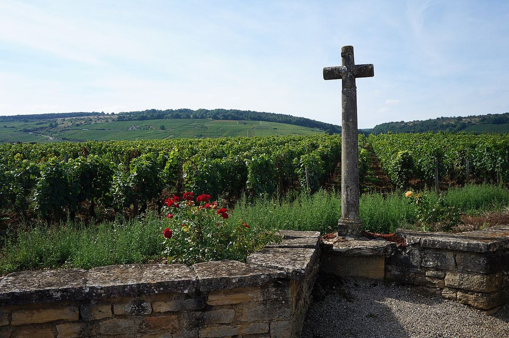

TINTO
La Côte de Nuits es la mitad septentrional de la Côte d'Or, entre Dijon y Corgoloin. Dedicada casi por completo a la Pinot Noir, concentra la gran mayoría de los grands crus tintos de Borgoña.

La Côte de Nuits es una estrecha franja de viñedo, a menudo de pocos cientos de metros de anchura, que sigue la falla que separa la meseta caliza de la llanura del Saona. Toma su nombre de Nuits-Saint-Georges, su principal población vinícola, y se extiende desde Marsannay, a las puertas de Dijon, hasta Corgoloin. Las viñas ocupan las laderas orientadas al este y al sureste, entre unos 250 y 350 metros de altitud; los grands crus se sitúan por lo general en la parte media de la pendiente, donde los suelos están mejor drenados y equilibrados.
La influencia monástica fue decisiva. Los cistercienses de Cîteaux reunieron y cercaron con un muro el Clos de Vougeot, cuyo castillo alberga hoy la cofradía de los Chevaliers du Tastevin, fundada en 1934. La abadía de Bèze dio nombre al Clos de Bèze, en Gevrey. En el siglo XIX, varios municipios añadieron a su nombre el de su viñedo más célebre, como Gevrey-Chambertin, Chambolle-Musigny o Vosne-Romanée, una costumbre repetida en otras zonas de Borgoña.
El clima es semicontinental, con riesgo de heladas y granizo. Los suelos combinan calizas y margas del Jurásico medio, en proporciones que varían de una parcela a otra; las calizas más duras y los suelos pedregosos de las zonas altas contrastan con terrenos más profundos y arcillosos al pie de la ladera, donde se sitúan las denominaciones regionales.
De norte a sur, los principales municipios son Marsannay, la única denominación comunal de la Côte d'Or que admite rosado; Fixin; Gevrey-Chambertin, con nueve grands crus, entre ellos Chambertin y Chambertin-Clos de Bèze; Morey-Saint-Denis, con Clos de la Roche, Clos Saint-Denis, Clos des Lambrays, Clos de Tart y parte de Bonnes-Mares; Chambolle-Musigny, con Musigny y la mayor parte de Bonnes-Mares; Vougeot; Vosne-Romanée, con Romanée-Conti, La Tâche, La Romanée, Richebourg, Romanée-Saint-Vivant y La Grande Rue, además de Échézeaux y Grands-Échézeaux, en el vecino Flagey-Échézeaux; y Nuits-Saint-Georges, que no tiene grands crus pero sí numerosos premiers crus. Los pueblos más meridionales comparten la denominación Côte de Nuits-Villages, y en las colinas situadas detrás se encuentran los Hautes-Côtes de Nuits.
La Pinot Noir domina de forma casi absoluta y da tintos de gran finura aromática, que según el municipio pueden ser más estructurados, como en Gevrey-Chambertin, o más delicados, como en Chambolle-Musigny. Se elaboran pequeñas cantidades de blancos de Chardonnay, como el Musigny blanco, uno de los pocos grands crus blancos de la Côte de Nuits.